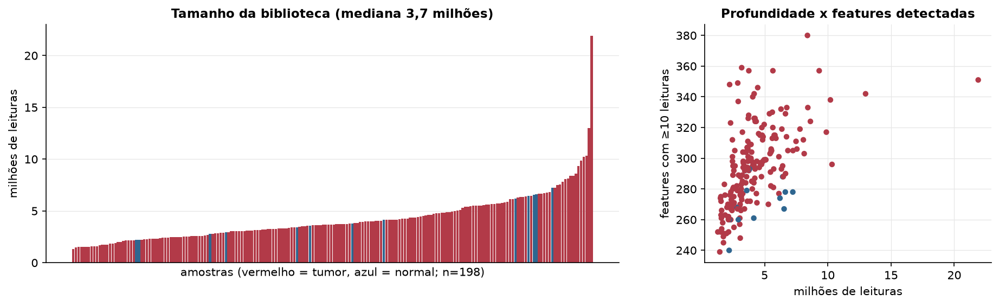
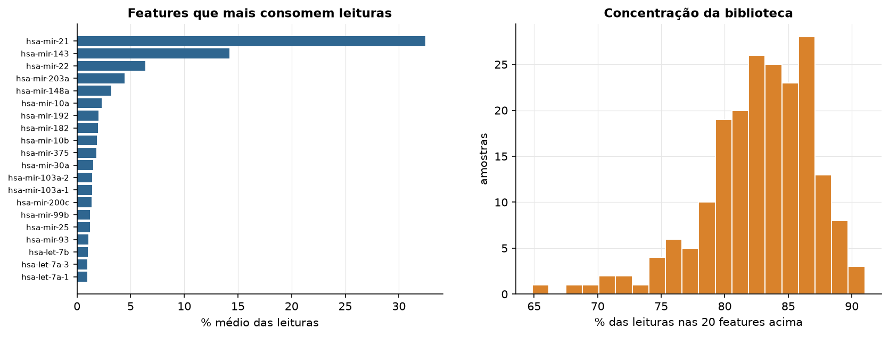
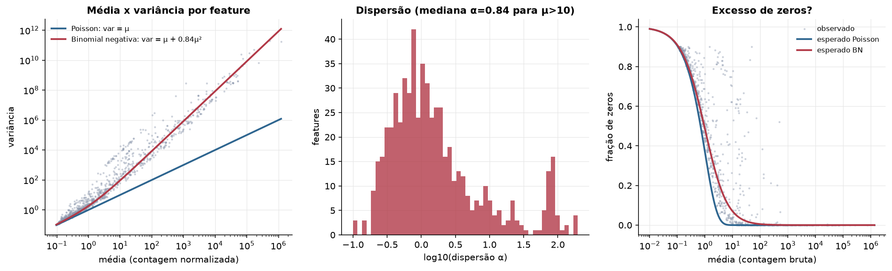
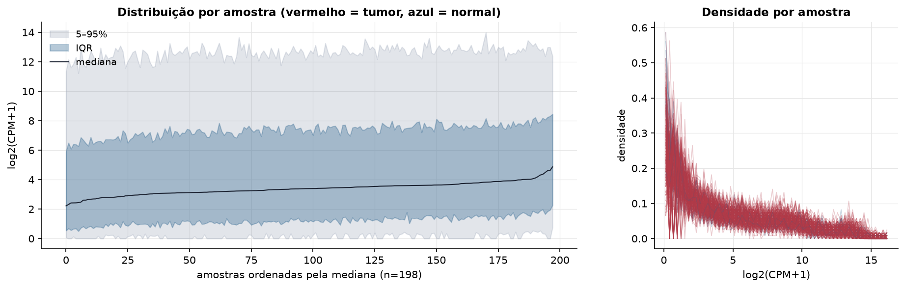
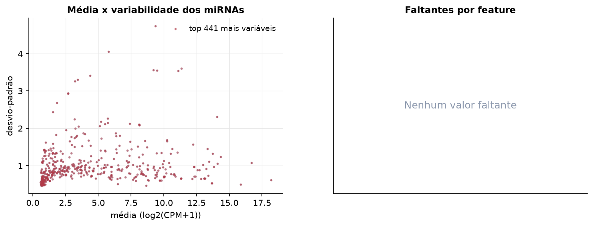
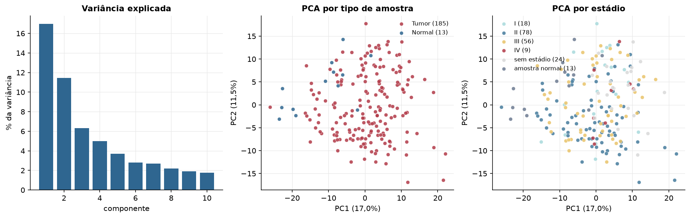
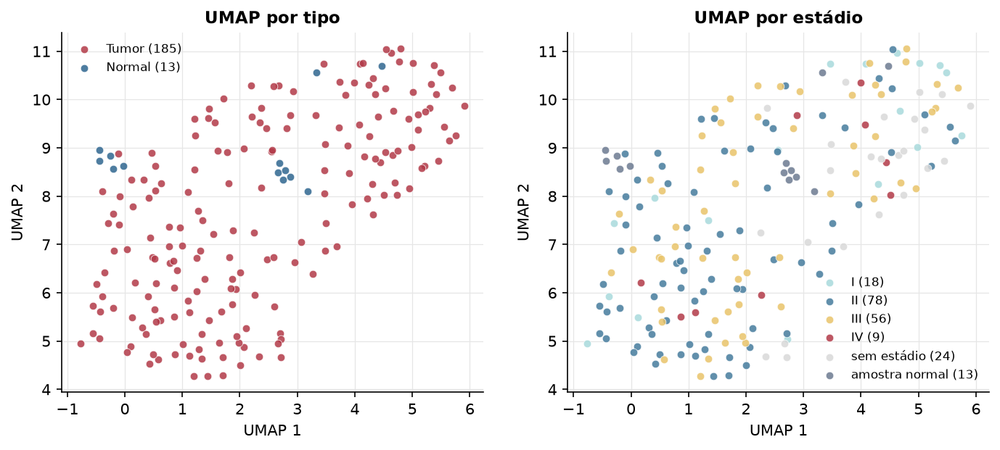
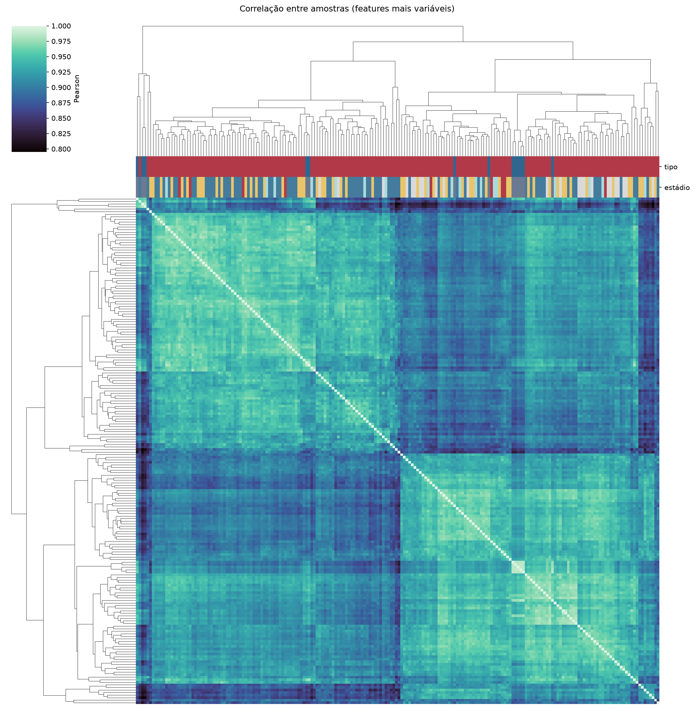
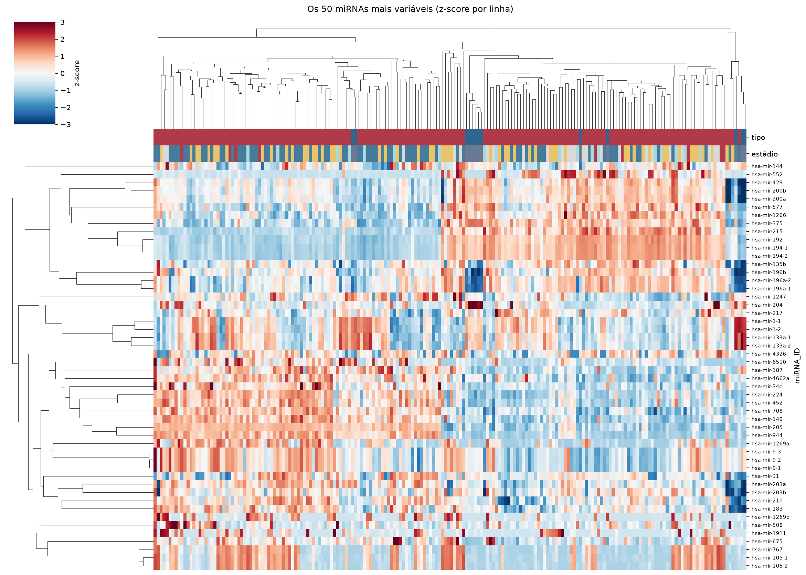
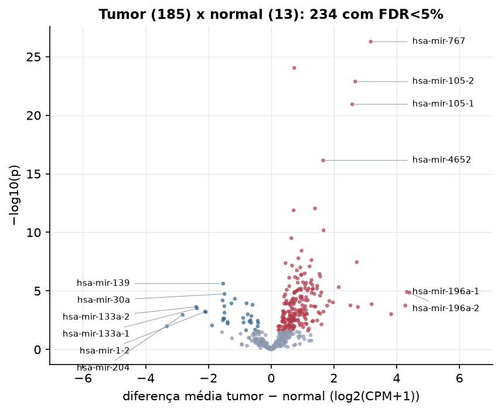

ESCA · miRNA-seq: contagens brutas (GDC)
BCGSC miRNA Profiling (miRBase v21) · gerado em 21/10/2026 21:08
3,7 Mtamanho mediano
0,84dispersão mediana α
441miRNAs
185amostras tumorais
13amostras normais
0,0%valores faltantes
Fonte: API do GDC (BCGSC miRNA Profiling)
Principais resultados
- Bibliotecas de 1,3 a 21,9 milhões de leituras (mediana 3,7). 1.014 de 1.881 features têm leitura em pelo menos 10% das amostras.
- A variância cresce bem acima da média: a dispersão mediana da binomial negativa é α=0.84 (para features com média > 10). Isso descarta um modelo Poisson e indica binomial negativa (ou Poisson-lognormal) na verossimilhança.
- A fração de zeros é compatível com a binomial negativa (diferença mediana -3,4%); inflação de zeros não parece necessária.
- Em média 83,3% das leituras de cada amostra vão para as 20 features mais abundantes.
- 441 miRNAs medidos em 198 amostras (185 tumorais e 13 normais); 0,0% dos valores estão faltando.
- Os dois primeiros componentes principais explicam 17,0% e 11,5% da variância das features mais variáveis.
- Correlação mediana entre amostras: 0,92.
- Amostras com correlação muito abaixo das demais (possíveis outliers técnicos): TCGA-IG-A3I8-11.
- Tumor x normal: 234 miRNAs diferentes com FDR < 5% (201 maiores no tumor, 33 maiores no normal; 13 pacientes têm o par tumor-normal).
- Mais aumentados no tumor: hsa-mir-767, hsa-mir-4664, hsa-mir-105-2, hsa-mir-105-1, hsa-mir-4652, hsa-mir-1180, hsa-mir-548f-1, hsa-mir-93.
- Mais reduzidos no tumor: hsa-mir-139, hsa-mir-30a, hsa-mir-338, hsa-mir-1468, hsa-mir-195, hsa-mir-378c, hsa-mir-30d, hsa-mir-29c.
- Associações clínicas com p < 0,05 nos componentes principais: PC2 com estádio (p=0.0054); PC2 com idade (p=9.8e-05); PC3 com idade (p=0.0015).
Biblioteca


Sobredispersão e zeros

Exploração em log2(CPM+1)
Features com CPM ≥ 1 em pelo menos 20% das amostras (441 features).
Distribuição dos valores


Estrutura das amostras




Tumor x normal

Features mais diferentes entre tumor e normal
| miRNA_ID | diferenca_tumor_menos_normal | t | p | fdr |
|---|---|---|---|---|
| hsa-mir-767 | 3.176 | 12.611 | 5.16e-27 | 2.28e-24 |
| hsa-mir-4664 | 0.737 | 13.011 | 9.12e-25 | 2.01e-22 |
| hsa-mir-105-2 | 2.682 | 11.573 | 1.32e-23 | 1.95e-21 |
| hsa-mir-105-1 | 2.586 | 10.978 | 1.16e-21 | 1.28e-19 |
| hsa-mir-4652 | 1.659 | 12.548 | 7.18e-17 | 6.33e-15 |
| hsa-mir-1180 | 1.397 | 11.061 | 8.98e-13 | 6.6e-11 |
| hsa-mir-548f-1 | 0.717 | 7.798 | 1.31e-12 | 8.27e-11 |
| hsa-mir-93 | 1.67 | 11.884 | 6.63e-11 | 3.66e-09 |
| hsa-mir-3652 | 0.643 | 7.838 | 3.11e-10 | 1.52e-08 |
| hsa-mir-3662 | 0.97 | 7.847 | 3.65e-09 | 1.61e-07 |
| hsa-mir-1911 | 0.869 | 6.087 | 1.62e-08 | 6.49e-07 |
| hsa-mir-877 | 1.286 | 8.745 | 2.33e-08 | 8.55e-07 |
| hsa-mir-224 | 2.729 | 8.376 | 3.48e-08 | 1.18e-06 |
| hsa-mir-3941 | 0.458 | 7.326 | 4.19e-08 | 1.32e-06 |
| hsa-mir-4449 | 0.668 | 6.074 | 6.9e-08 | 2.03e-06 |
| hsa-mir-937 | 1.227 | 8.105 | 7.98e-08 | 2.2e-06 |
| hsa-mir-324 | 0.929 | 7.927 | 9.9e-08 | 2.57e-06 |
| hsa-mir-98 | 0.82 | 7.821 | 1.77e-07 | 4.33e-06 |
| hsa-mir-483 | 1.07 | 6.559 | 3.22e-07 | 7.47e-06 |
| hsa-mir-4746 | 1.541 | 8.348 | 3.51e-07 | 7.73e-06 |
| hsa-mir-301b | 0.963 | 7.329 | 4.19e-07 | 8.64e-06 |
| hsa-mir-25 | 0.956 | 7.153 | 4.31e-07 | 8.64e-06 |
| hsa-mir-106b | 1.566 | 8.097 | 5.84e-07 | 1.12e-05 |
| hsa-let-7i | 0.763 | 7.511 | 6.53e-07 | 1.2e-05 |
| hsa-mir-3690-1 | 0.577 | 6.863 | 7.55e-07 | 1.33e-05 |
| hsa-mir-199b | 0.839 | 7.032 | 8.47e-07 | 1.44e-05 |
| hsa-mir-421 | 1.287 | 7.619 | 1.17e-06 | 1.91e-05 |
| hsa-mir-1304 | 1.015 | 6.774 | 1.83e-06 | 2.88e-05 |
| hsa-mir-331 | 0.846 | 6.831 | 1.97e-06 | 2.89e-05 |
| hsa-mir-20a | 1.257 | 7.157 | 2.01e-06 | 2.89e-05 |
Associação com variáveis clínicas
p-valores da associação dos três primeiros componentes principais (só tumores) com estádio (Kruskal-Wallis), sexo (Mann-Whitney), idade (Spearman) e sobrevida global (Cox univariado).
| estádio (Kruskal) | sexo (Mann-Whitney) | idade (Spearman) | sobrevida OS (Cox) | |
|---|---|---|---|---|
| PC1 (15,7%) | 0.449 | 0.48 | 0.475 | 0.064 |
| PC2 (11,7%) | 0.005 | 0.799 | 9.78e-05 | 0.724 |
| PC3 (6,2%) | 0.474 | 0.628 | 0.001 | 0.721 |